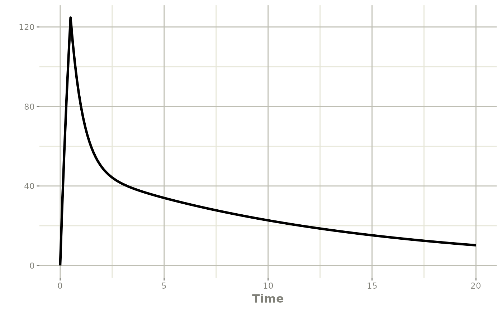
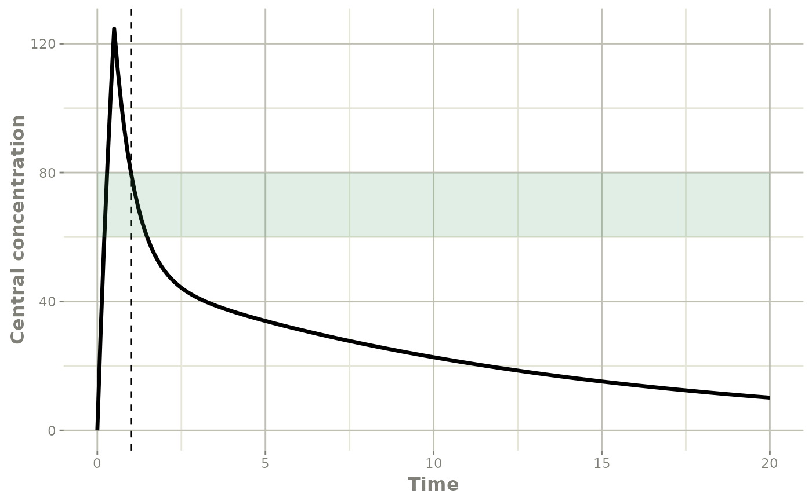

Introduction
First dose selection for a critical care patient treated with amikacin for suspected ventilator-associated pneumonia. Population pharmacokinetic (ppk) model form Burdet et al. 2015.
mod_amikacin_Burdet2015 <- function() {
ini({
THETA_Cl=4.3
THETA_Vc=15.9
THETA_Vp=21.4
THETA_Q=12.1
ETA_Cl + ETA_Vc + ETA_Vp + ETA_Q ~
c(0.1,
0.01 , 0.05 ,
0.01 , 0.02 , 0.2 ,
-0.06 , 0.004, 0.003, 0.08)
add_sd <- 0.2
prop_sd <- 0.1
})
model({
TVCl = THETA_Cl*(CLCREAT4H/82)^0.7
TVVc = THETA_Vc*(TBW/78)^0.9*(PoverF/169)^0.4
TVVp = THETA_Vp
TVQ = THETA_Q
Cl = TVCl*exp(ETA_Cl)
Vc = TVVc*exp(ETA_Vc)
Vp = TVVp*exp(ETA_Vp)
Q = TVQ *exp(ETA_Q)
ke = Cl/Vc
k12 = Q/Vc
k21 = Q/Vp
Cp = centr/Vc
d/dt(centr) = - ke*centr - k12*centr + k21*periph
d/dt(periph) = + k12*centr - k21*periph
Cp ~ add(add_sd) + prop(prop_sd) + combined1()
})
}A priori dose selection
Patient record
Before the first administration, no concentration information is available. The patient record contains only the information required to fill in the covariates of the model:
- CLCREAT4H: 4-h creatinine clearance in ml/min
- TBW: Total body weight in kg
- PoverF: PaO2/FIO2 ratio in mmHg
df_patientA <- data.frame(ID=1,TIME=0,
DV=0,
EVID=0,
AMT=0,
CLCREAT4H=50,TBW=62,PoverF=169)
df_patientA
#> ID TIME DV EVID AMT CLCREAT4H TBW PoverF
#> 1 1 0 0 0 0 50 62 169Optimal dose selection
In the absence of measured concentrations, the optimal dose in mg to achieve a concentration of 80 mg/l one hour after the start of the 30-minute infusion is determined from the typical profile of the ppk model.
prior_dose <- poso_dose_conc(dat=df_patientA,
prior_model=mod_amikacin_Burdet2015,
time_c = 1, #30 min after a
duration = 0.5, #30 min infusion
target_conc = 80)
prior_dose
#> $dose
#> [1] 2087.668
#>
#> $type_of_estimate
#> [1] "point estimate"
#>
#> $conc_estimate
#> [1] 80
#>
#> $indiv_param
#> THETA_Cl THETA_Vc THETA_Vp THETA_Q add_sd prop_sd ETA_Cl ETA_Vc
#> 1 4.3 15.9 21.4 12.1 0.2 0.1 -3.114346e-06 -1.586456e-06
#> ETA_Vp ETA_Q CLCREAT4H TBW PoverF
#> 1 -2.287222e-06 2.906001e-06 50 62 169Time required to reach the target Cmin
Following this dose, the time in hours required to reach a target Cmin concentration of 2.5 mg/l can be estimated.
poso_time_cmin(dat=df_patientA,
prior_model=mod_amikacin_Burdet2015,
dose = prior_dose$dose,
duration = 0.5, #30 min infusion
target_cmin = 2.5)
#> $time
#> [1] 37.5
#>
#> $type_of_estimate
#> [1] "point estimate"
#>
#> $cmin_estimate
#> [1] 2.496363
#>
#> $indiv_param
#> THETA_Cl THETA_Vc THETA_Vp THETA_Q add_sd prop_sd ETA_Cl ETA_Vc
#> 1 4.3 15.9 21.4 12.1 0.2 0.1 4.924255e-14 4.418555e-14
#> ETA_Vp ETA_Q CLCREAT4H TBW PoverF
#> 1 9.396548e-14 -3.822045e-14 50 62 169Plotting the selected dosage
The selected dose can be simulated and plotted. By setting n_simul = 0, the poso_simu_pop() function produces a compiled rxode2 model without inter-individual variability, using typical population parameter values and individual covariates from the patient record.
# generate a model using the individual covariates
simu_patA <- poso_simu_pop(dat=df_patientA,
prior_model=mod_amikacin_Burdet2015,
n_simul = 0)Observations and a 30-minutes infusion of the optimal dose are added to the rxode2 model by updating the rxode2 event table.
simu_patA$model$time <- seq(0,20,b=0.1)
#> Warning: can not update object
simu_patA$model$add.dosing(dose=prior_dose$dose,rate=prior_dose$dose/0.5)Plotting the simulated scenario.
plot(simu_patA$model,Cc)
The resulting plot can be further augmented with ggplot2. For example, by adding an horizontal ribbon showing the 60-80 mg/l target interval of 1 h peak concentration, and a vertical dashed line marking 1 hour.
plot(simu_patA$model,Cc) +
ggplot2::ylab("Central concentration") +
ggplot2::geom_vline(xintercept=1, linetype="dashed") +
ggplot2::geom_ribbon(ggplot2::aes(ymin=60, ymax=80),
fill="seagreen",show.legend = FALSE, alpha=0.15)
For a typical patient (i.e. with a PK profile typical of the model population), the selected dose meets the peak concentration target.